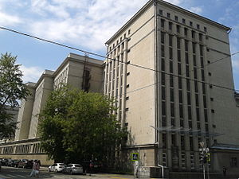

Объем и структура Архивного фонда РФ
Объем Архивного фонда РФ насчитывает более 600 млн. единиц хранения на различных носителях, 41,0 млн. самых ценных единиц сконцентрирован в федеральных архивах.
Одним из самых крупных федеральных архивов подобного назначения выступает "Государственный архив Российской Федерации" (ГА РФ). Для перехода на сайт архива достаточно кликнуть на изображение.
Каждый год происходит увеличение Архивного фонда Российской Федерации, хранящихся в государственных и муниципальных архивах, на 1,7 млн. единиц хранения.
Структура фонда представлена сетью федеральных, региональных и муниципальных архивов, а также сетью министерских, ведомственных архивов и архивов организаций, в том числе негосударственных.
Архивный Фонд Российской Федерации делится на госудаственную и негосударственную часть Архивного фонда Российской Федерации.
Государственна часть представлена:
- архивными фондами и архивными документами государственных учреждений, организаций, предприятий и государственных институтов, действовавших на территории России на всем протяжении ее истории;
- архивными фондми и архивными документами органов государственной власти, местного самоуправления, прокуратуры, государственных учреждений, организаций и предприятий, воинских частей, действующих на территории РФ;
- архивными фондами и архивными докментами отечественных государственных учреждений, воинских частей, находившихся и (или) находящихся за границей;
- архивными фондами и архивными документами предприятий,организаций и объединений смешанных форм собственности, в уставном капитале которых имеется преобладающая доля федеральной или государственной собственности;
- архивными фондами и архивными документами органов, учреждений, организаций и предприятий бывших КПСС и ВЛКСМ;
- архивными фондами и архивными документами других общественных организаций и объединений, образовавшиеся при осуществлении их деятельности до момента регистрации в соответствии с законодательством Российской Федерации об общественных объединениях, принятые в учреждения Государственной архивной службы России;
- архивными фондами и архивными документами юридических и физических лиц, поступившие на законном основании в собственность государства, в том числе из-за рубежа;
- копиями архивных документов на правах подлинников, а также копиями архивных документов, поступивших на законных основаниях в собственность государства из-за рубежа.
Негосударственная часть содержит:
- архивные фонды и архивные документы общественных объединений и организаций с момента их регистрации в соответствии с законодательством Российской Федерации об общественных объединениях, в том числе профессиональных союзов, благотворительных и иных фондов, политических партий и движений;
- религиозных объединений и организаций;
- негосударственных объединений (корпораций, ассоциаций, акционерных обществ), учреждений, организаций и предприятий промышленности, сельского хозяйства, других отраслей экономики, науки, культуры, социальной сферы, средств массовой информации;
- физических лиц (документы личного происхождения, фамильные архивы, коллекции документов и другие).
Масштаб Архивного фонда Российской федерации демонстрирует количество арховов. Федеральные архивы представлены следующими организациями:
- Государственный архив Российской Федерации (ГА РФ) www.statearchive.ru;
- Российский государственный архив древних актов (РГАДА) www.rgada.info;
- Российский государственный исторический архив (РГИА) www.fgurgia.ru;
- Российский государственный военно-исторический архив (РГВИА) www.ргвиа.рф;
- Российский государственный архив военно-морского флота (РГАВМФ) www.rgavmf.ru;
- Российский государственный архив экономики (РГАЭ) www.rgae.ru;
- Российский государственный архив литературы и искусства (РГАЛИ) www.rgali.ru;
- Российский государственный военный архив (РГВА) www.rgvarchive.ru;
- Российский государственный исторический архив Дальнего Востока (РГИАДВ) www.rgiadv.ru;
- Российский государственный архив научно-технической документации (РГАНТД)www.rgantd.ru;
- Российский государственный архив фонодокументов (РГАФД) www.ргафд.рф;
- Российский государственный архив кинофотодокументов (РГАКФД) www.rgakfd.ru;
- Российский государственный архив социально-политической истории (РГАСПИ) www.rgaspi.org;
- Российский государственный архив новейшей истории
(РГАНИ) www.ргани.рф;
- Центр хранения страхового фонда www.archives.ru.
Архивный фонд Российской Федерации располагает, кроме федеральных, 230 региональными государственными архивами и 2,5 тыс. муниципальными архивами.
В нашем регионе, а именно в Свердовской обасти, находится Государственный Архив Свердловской области, доступ к сайту учреждения которого производится по адресу www.gaso-ural.ru.
Архив оказаывает бесплатные и платные услуги. К первой категории относятся социально-правовые запросы, касающиеся выявления и подтверждения сведений:
- рождение, брак и смерть;
- награждение медалями;
- эвакуацию граждан;
- пребывание в детских домах;
- о раскулачивании граждан;
- об имущественных правах граждан.
Платные услуги оказываются в рамках следующих направлений:
- генеалогическое исследование;
- тематическая поддборка материалов по истории организации;
- обработка документов.
Государственный Архив Свердловской области регулярно проводит выставки архивных документов. Например, 22 декабря 2017 года была представлена выставка на тему: "130 лет со дня рождения скульптора И.Д. Шадра и 115 лет со дня открытия художественного училища им. И.М. Шадра" в СОУНБ им.Белинского.
Ознакомиться с исчерпывающей и наглядной информацией относительно состава и объемов документов Архивного фонада РФ и других архивных документов предлагается с помощью "Справки об итогах паспортизации федеральных архивов по состоянию на 01.01.2016 года.
Об использовании Архивного фонда РФ можно узнать из следующего раздела сайта.
В начало страницы